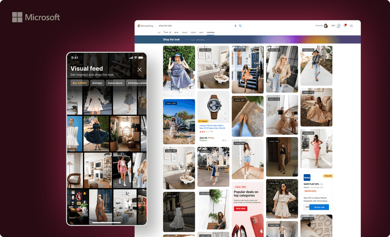

Conceptualized the visual "shop the look" experience for Bing and then pivoted it for MSN. Designed extensively to handle edge cases across multiple platforms and content types.
3 million impressions and 30,000 active engagements every month.
Led the design from initial concept through to a cross-platform launch. Worked with engineers to define the visual feed's layout system and ensure it gracefully handled variable content, missing data, and responsive breakpoints.